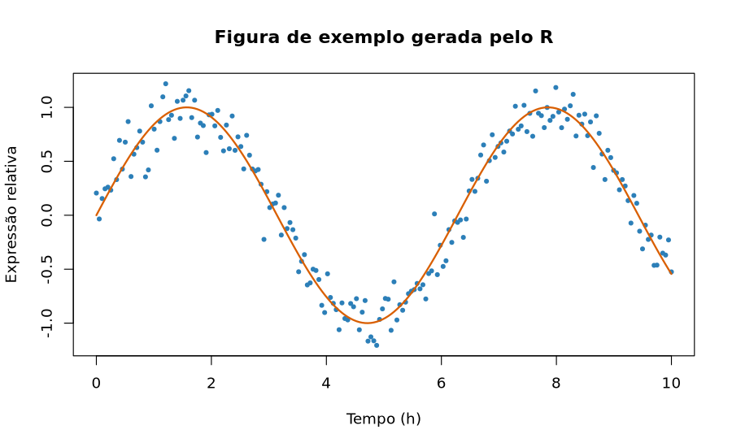
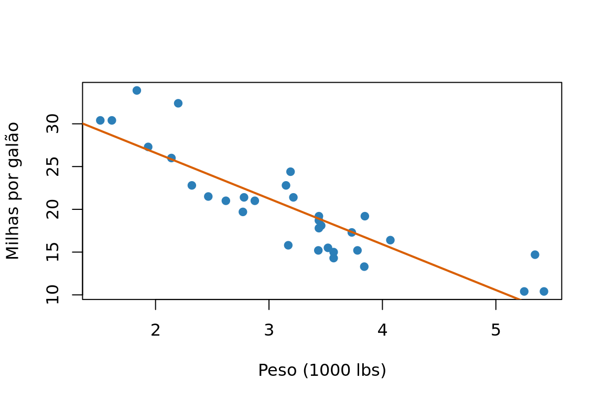
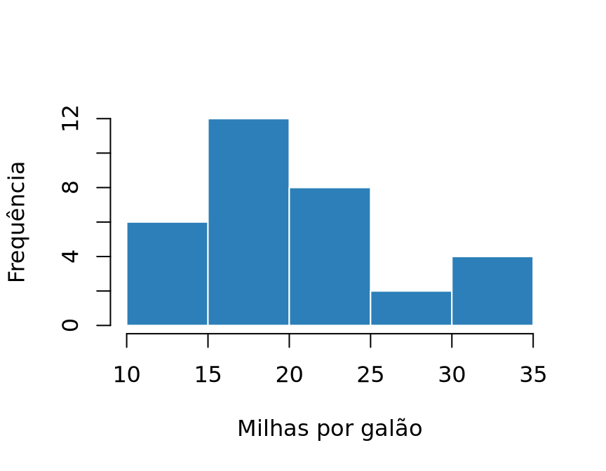
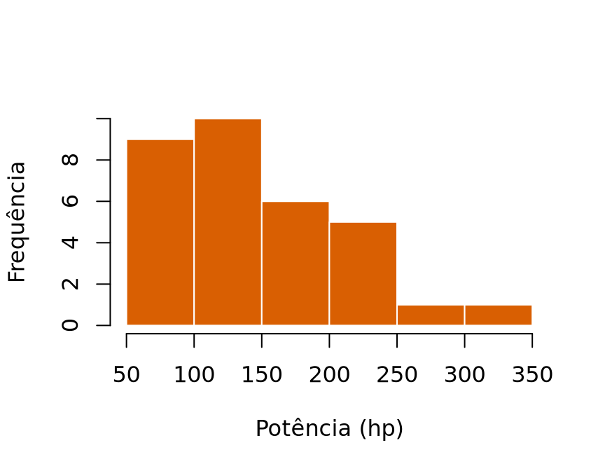
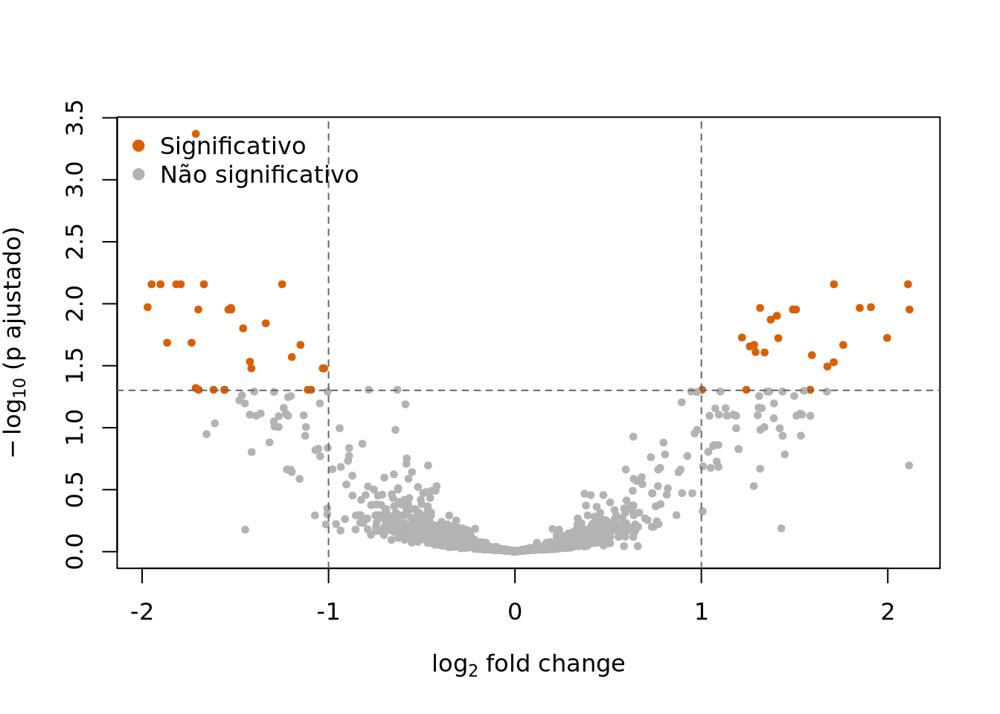
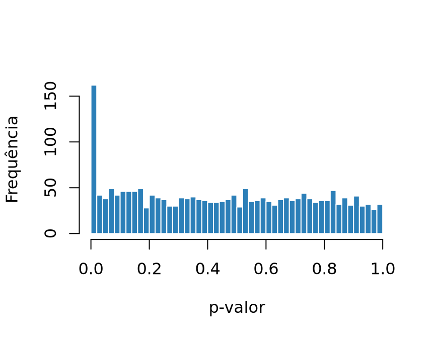
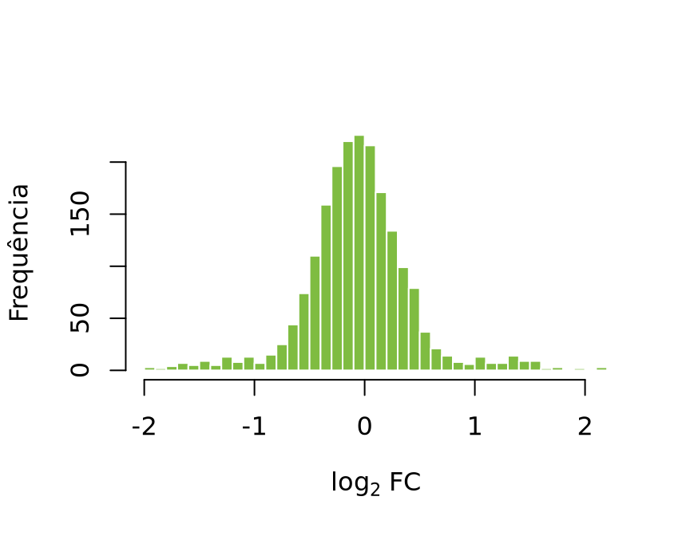

flowchart LR
A["documento.qmd<br/>(texto + código)"] --> B["knitr / jupyter<br/>executa o código"]
B --> C["documento.md<br/>(markdown puro)"]
C --> D["Pandoc<br/>converte"]
D --> E["HTML"]
D --> F["PDF (LaTeX)"]
D --> G["Word (docx)"]
D --> H["revealjs (slides)"]
Introdução ao Quarto
Minicurso — Simpósio Norte-Nordeste de Bioinformática
NotaComo usar este documento
Este é o material de apoio completo do minicurso: conteúdo, exemplos e soluções comentadas de todos os exercícios.
- As soluções ficam escondidas em blocos recolhíveis — clique em “Ver solução” para abrir. Tente resolver antes de espiar!
- Todo o código aqui é reproduzível: você pode copiar, colar e renderizar.
- Os slides usados em aula estão em
slides-minicurso-quarto.qmd.
1 Antes de começar
1.1 Preparando o ambiente
# 1. Clone o repositório e entre nele
git clone https://github.com/juliaapolonio/intro-to-quarto.git
cd intro-to-quarto
# 2. Crie o ambiente conda a partir da receita
conda env create -f environment.yml
# 3. Ative o ambiente
conda activate quarto-env
# 4. Abra o Positron
positron .Para conferir se está tudo certo:
quarto checkO comando acima verifica a instalação do Quarto, do Pandoc, do TinyTeX (para PDF) e dos motores de execução disponíveis (R via knitr, Python via jupyter). Se algum item aparecer com [✓], está funcionando.
DicaPor que Positron?
O Positron é uma IDE da Posit (mesma empresa do RStudio e do Quarto) construída sobre o VS Code. Ela tem suporte nativo a Quarto, painel de variáveis, console de R e de Python na mesma janela — o que é conveniente para quem trabalha com bioinformática e transita entre as duas linguagens. Tudo neste curso funciona igualmente bem no RStudio, no VS Code (com a extensão Quarto) ou em qualquer editor de texto + terminal.
1.2 Agenda
| Bloco | Conteúdo | Tempo |
|---|---|---|
| 1 | Introdução: por que Quarto, extensões, documentação | 20 min |
| 2 | O Quarto: features, renderização, R Markdown vs Quarto | 25 min |
| 3 | Notação Markdown (Exercícios 1 e 2) | 70 min |
| — | ☕ Intervalo | 15 min |
| 4 | Header / YAML (Exercício 3) | 35 min |
| 5 | Personalização (Exercício 4) | 50 min |
| 6 | Code chunks (Exercício 5) | 70 min |
| 7 | Encerramento e próximos passos | 15 min |
| Total | 5 h |
2 Introdução
2.1 Por que usar Quarto?
Imagine o fluxo de trabalho clássico de uma análise de bioinformática:
- Rodar o pipeline no cluster;
- Abrir o R, gerar 12 figuras e 5 tabelas;
- Salvar tudo como
.pnge.csvnuma pastaresultados/; - Abrir o Word, colar as figuras, escrever o texto ao redor;
- O orientador pede para trocar o filtro de p-valor de 0,05 para 0,01;
- Voltar ao passo 1 e refazer tudo à mão.
O Quarto elimina os passos 3 a 6. O texto, o código e os resultados moram no mesmo arquivo; quando o dado muda, o documento inteiro se atualiza com um comando. Isso é o que Knuth (Knuth 1984) chamou de literate programming e o que hoje chamamos de pesquisa reproduzível (Peng 2011; Sandve et al. 2013).
Na prática, os ganhos são:
- Reprodutibilidade. O número que está no texto foi calculado, não digitado.
- Rastreabilidade. O
.qmdé texto puro → versiona bem no Git, dá para fazer diff e code review de um relatório. - Um fonte, vários destinos. O mesmo arquivo vira HTML, PDF, Word, slides, site, livro ou dashboard.
- Poliglota. R, Python, Julia e Observable JS no mesmo documento — útil quando o alinhamento é em Python e a estatística é em R.
- Estética decente por padrão. Você não precisa saber CSS para produzir algo apresentável (mas dá para ir longe se souber).
ImportanteA regra de ouro
Se você teve que copiar e colar um resultado para dentro do texto, esse resultado vai ficar desatualizado. É só uma questão de tempo.
2.2 Onde o Quarto se encaixa
2.3 Extensões
O ecossistema de extensões amplia o Quarto sem que você precise escrever filtros Lua do zero. Instalação e uso:
# Instalar uma extensão no projeto atual
quarto add quarto-ext/fontawesome
# Listar o que está instalado
quarto list extensions
# Atualizar / remover
quarto update quarto-ext/fontawesome
quarto remove quarto-ext/fontawesomeExtensões úteis para quem trabalha com ciência:
| Extensão | Para que serve |
|---|---|
quarto-ext/fontawesome |
Ícones no texto e nos slides |
quarto-journals/* |
Templates de periódicos (PLOS, Elsevier, ACM…) |
mcanouil/quarto-iconify |
Acesso a ~200 mil ícones |
shafayetShafee/downloadthis |
Botão de download de arquivos no HTML |
quarto-ext/lightbox |
Clique na figura para ampliar |
EmilHvitfeldt/quarto-roughnotation |
Anotações animadas em slides |
quarto-ext/pointer |
Laser pointer em apresentações |
Catálogo completo: https://quarto.org/docs/extensions/
Aviso
Extensões são instaladas por projeto, dentro da pasta _extensions/. Commite essa pasta no Git — senão quem clonar seu repositório não conseguirá renderizar.
2.4 Documentação
- Documentação oficial: https://quarto.org/docs/guide/ — excelente e com exemplos copiáveis.
- Referência de todas as opções de YAML: https://quarto.org/docs/reference/
- Galeria de exemplos: https://quarto.org/docs/gallery/
- Awesome Quarto (lista comunitária): https://github.com/mcanouil/awesome-quarto
- Fórum de dúvidas: https://github.com/quarto-dev/quarto-cli/discussions
DicaDica de estudo
Quase toda página da documentação do Quarto tem a opção de ver o código-fonte do exemplo. Quando algo parecer mágico, procure o .qmd original.
3 O Quarto
3.1 Features principais
Um arquivo .qmd tem três tipos de conteúdo:
- Header YAML — os metadados e as opções, entre
---e---, no topo. - Texto em Markdown — a narrativa.
- Blocos de código (chunks) — o que é executado.
Esqueleto mínimo:
---
title: "Meu relatório"
format: html
---
## Introdução
Texto normal em **markdown**.E um bloco de código executável tem esta forma:
```{r}
#| label: exemplo
#| echo: true
1 + 1
```Que ao renderizar produz:
1 + 1
#> [1] 2
NotaAnatomia de um chunk
```{r}abre o bloco e diz qual linguagem executar (r,python,julia,bash,mermaid,dot…).- As linhas iniciadas por
#|(hash-pipe) são as opções do chunk, escritas em YAML. ```fecha o bloco.
3.2 Renderização
# Renderizar um arquivo
quarto render documento.qmd
# Renderizar num formato específico
quarto render documento.qmd --to pdf
# Servidor com recarregamento automático (ótimo para desenvolver)
quarto preview documento.qmd
# Renderizar um projeto inteiro
quarto renderNo Positron/RStudio existe o botão Render (atalho Ctrl/Cmd + Shift + K), que faz exatamente a mesma coisa.
Dica
preview é seu melhor amigo
quarto preview abre o documento no navegador e re-renderiza sozinho a cada vez que você salva. Deixe rodando numa aba do terminal durante todo o desenvolvimento.
3.3 Formatos de saída
| Formato | Chave no YAML | Observação |
|---|---|---|
| Página web | html |
Padrão; interativo, leve |
| Artigo | pdf |
Via LaTeX; requer TinyTeX |
| Word | docx |
Para colaborar com quem não usa R |
| Slides | revealjs, beamer, pptx |
revealjs é HTML e é o mais poderoso |
| Site / livro | projeto website, book |
Vários .qmd num só produto |
| Dashboard | dashboard |
Painéis com value boxes e abas |
| Markdown | gfm, commonmark |
Ótimo para README de repositório |
3.4 R Markdown vs Quarto
O Quarto é o sucessor do R Markdown, escrito do zero em TypeScript e independente do R. Não é um pacote de R: é um programa de linha de comando.
R Markdown (.Rmd) |
Quarto (.qmd) |
|
|---|---|---|
| Motor | Pacote rmarkdown (exige R) |
Executável independente |
| Linguagens | R (Python via reticulate) |
R, Python, Julia, OJS nativamente |
| Opções de chunk | Na chave: {r fig.width=6} |
No corpo: #| fig-width: 6 |
| Nomes das opções | fig.width, out.width |
fig-width, out-width |
| Cross-references | Precisa do bookdown |
Nativo (@fig-, @tbl-, @eq-) |
| Callouts, tabsets, layout | Precisa de pacotes/CSS | Nativos |
| Slides | xaringan, ioslides |
revealjs nativo |
| Consistência entre formatos | Cada formato, um pacote | Uma sintaxe só |
NotaPreciso migrar tudo?
Não. O Quarto renderiza arquivos .Rmd sem alterações na maioria dos casos — basta rodar quarto render arquivo.Rmd. A migração pode ser gradual: comece usando .qmd nos projetos novos.
Duas diferenças que pegam todo mundo desprevenido:
- Ponto vira hífen.
fig.cap→fig-cap,out.width→out-width. - Opções saem do cabeçalho do chunk. Em vez de
```{r meu-chunk, echo=FALSE}, escreva o rótulo na chave e o resto com#|:
```{r}
#| label: meu-chunk
#| echo: false
```4 Notação Markdown
Markdown é uma linguagem de marcação criada para ser legível mesmo sem renderizar. O Quarto usa o Pandoc Markdown, que é um superconjunto do Markdown clássico.
4.1 Formatação de texto
| Você escreve | Você obtém |
|---|---|
*itálico* ou _itálico_ |
itálico |
**negrito** |
negrito |
***negrito e itálico*** |
negrito e itálico |
~~riscado~~ |
|
`código` |
código |
H~2~O |
H2O (subscrito) |
10^-9^ |
10-9 (sobrescrito) |
[versalete]{.smallcaps} |
versalete |
> citação |
bloco de citação |
Um parágrafo novo exige uma linha em branco. Se você quiser apenas quebrar a linha sem começar um parágrafo, termine a linha com dois espaços ou uma barra invertida \.
Blocos de citação começam com
>. Servem para destacar trechos citados de outra fonte.
4.2 Títulos
# Título de nível 1
## Título de nível 2
### Título de nível 3
AvisoUm
# só por documento
Se você usa title: no YAML, o Quarto já cria o título principal. Comece suas seções em ## para não ter dois títulos de nível 1 competindo — isso também melhora a acessibilidade e o sumário.
Para dar um identificador manual a uma seção (e poder referenciá-la):
## Métodos {#sec-metodos}E então, no texto: Como descrito na @sec-metodos... — desde que number-sections: true esteja no YAML.
4.3 Links e imagens
[texto do link](https://quarto.org)
<https://quarto.org> <!-- link automático -->
[link com tooltip](https://quarto.org "Site oficial")
[link para outra seção](#sec-markdown)

{width=60%}
{#fig-minha fig-align="left"}A diferença entre link e imagem é o ! na frente. Resultado:

Repare que a Figura 2 recebeu um id começando com fig- — isso é o que a torna referenciável.
DicaSempre use caminhos relativos
imagens/figura.png funciona na máquina de qualquer pessoa que clonar o repositório. /home/diego/Documentos/figura.png não.
4.4 Listas
- item
- outro item
- subitem (indente com 2 ou 4 espaços)
- terceiro
1. primeiro
2. segundo
3. terceiro
- [ ] tarefa pendente
- [x] tarefa concluída
Termo
: Definição do termoRenderizado:
- item
- outro item
- subitem
- terceiro
- primeiro
- segundo
- terceiro
- FASTQ
- Formato de texto que armazena sequências e suas qualidades por base.
- VCF
- Variant Call Format; formato padrão para variantes genéticas.
AvisoListas precisam de linha em branco antes
Este é o bug de Markdown mais comum do mundo. Sem uma linha em branco separando o parágrafo da lista, o Pandoc trata tudo como um parágrafo só.
4.5 Exercício 1
Dica✅ Ver solução do Exercício 1
---
title: "Exercício 1 — Primeiros passos"
author: "Fulana de Tal"
date: today
lang: pt-BR
format: html
---
## Sobre mim
Sou **bioinformata** e trabalho principalmente com dados de *RNA-seq* de
plantas do semiárido. Meu interesse é entender como a expressão gênica
responde ao estresse hídrico e à concentração de CO~2~.
## Ferramentas que eu uso
- R
- tidyverse
- DESeq2
- Python
- Nextflow
## Passos de uma análise de RNA-seq
1. Controle de qualidade das leituras (FastQC)
2. Trimagem de adaptadores (fastp)
3. Quantificação (Salmon)
4. Expressão diferencial (DESeq2)
## Referências
A documentação oficial está em [quarto.org](https://quarto.org/docs/guide/).
{width=70%}Pontos de atenção mais comuns:
- Faltou a linha em branco antes da lista → tudo vira um parágrafo.
- Os subitens precisam de indentação consistente (2 ou 4 espaços, não misture).
date: todaysó funciona no Quarto (no R Markdown daria erro).- Se a imagem não aparecer, confira o caminho relativo a partir do
.qmd.
4.6 Footnotes
Este método é amplamente usado.[^1]
[^1]: Ainda que existam críticas relevantes na literatura recente.
Também dá para usar notas em linha.^[Assim, sem precisar declarar depois.]Resultado: este método é amplamente usado.1
Também dá para usar notas em linha.2
O rótulo ([^1], [^metodo]) é apenas interno; a numeração final é automática e segue a ordem de aparição no texto.
4.7 Tabelas
4.7.1 Tabelas de pipe
| Gene | log2FC | p-ajustado |
|:--------|-------:|-----------:|
| BRCA1 | 2,31 | 0,0001 |
| TP53 | -1,87 | 0,0034 |
| EGFR | 0,45 | 0,2100 |
: Genes diferencialmente expressos {#tbl-degs}O alinhamento é definido pelos dois-pontos na linha de separação: :--- à esquerda, ---: à direita, :---: centralizado.
| Gene | log2FC | p-ajustado |
|---|---|---|
| BRCA1 | 2,31 | 0,0001 |
| TP53 | -1,87 | 0,0034 |
| EGFR | 0,45 | 0,2100 |
4.7.2 Tabelas de grade
Quando você precisa de várias linhas dentro de uma célula ou de listas dentro da tabela:
+---------------+---------------------------+
| Etapa | Ferramentas |
+===============+===========================+
| QC | - FastQC |
| | - MultiQC |
+---------------+---------------------------+
| Alinhamento | - STAR |
| | - HISAT2 |
+---------------+---------------------------+| Etapa | Ferramentas |
|---|---|
| QC |
|
| Alinhamento |
|
DicaNão escreva tabelas grandes à mão
Para qualquer coisa acima de ~10 linhas, gere a tabela a partir dos dados com knitr::kable() ou gt (veremos na Seção 7). Escrever a mão é retrabalho garantido.
Para converter uma tabela existente em Markdown, o site https://www.tablesgenerator.com/markdown_tables ajuda bastante.
Classes úteis para tabelas em HTML: .striped, .hover, .bordered, .borderless, .sm. Aplicam-se na mesma chave da legenda.
4.8 Equações
Equações usam sintaxe LaTeX. Em linha, entre cifrões simples: $E = mc^2$ → \(E = mc^2\).
Em bloco, entre cifrões duplos:
$$
\text{CPM}_{ij} = \frac{c_{ij}}{\sum_{k} c_{kj}} \times 10^6
$$\[ \text{CPM}_{ij} = \frac{c_{ij}}{\sum_{k} c_{kj}} \times 10^{6} \]
Para poder referenciar, dê um id começando com eq-:
$$
\log_2 \text{FC} = \log_2\!\left(\frac{\mu_{\text{tratado}}}{\mu_{\text{controle}}}\right)
$$ {#eq-log2fc}\[ \log_2 \text{FC} = \log_2\!\left(\frac{\mu_{\text{tratado}}}{\mu_{\text{controle}}}\right) \tag{1}\]
E cite no texto com @eq-log2fc: o fold change da Equação 1 é a métrica mais reportada em estudos de expressão diferencial.
Alguns comandos que você vai usar bastante:
| LaTeX | Resultado |
|---|---|
\alpha, \beta, \mu, \sigma |
\(\alpha, \beta, \mu, \sigma\) |
x_i, x^2 |
\(x_i\), \(x^2\) |
\frac{a}{b} |
\(\frac{a}{b}\) |
\sum_{i=1}^{n} |
\(\sum_{i=1}^{n}\) |
\sqrt{x}, \overline{x} |
\(\sqrt{x}\), \(\overline{x}\) |
\leq, \geq, \neq, \approx |
\(\leq, \geq, \neq, \approx\) |
\hat{\beta}, \text{texto} |
\(\hat{\beta}\), \(\text{texto}\) |
4.9 Diagramas
O Quarto tem suporte nativo a Mermaid e Graphviz, sem instalação extra.
4.9.1 Mermaid
```{mermaid}
flowchart TD
A[FASTQ] --> B[Controle de qualidade]
B --> C{Qualidade OK?}
C -->|Sim| D[Alinhamento]
C -->|Não| E[Trimagem]
E --> B
D --> F[Contagem]
F --> G[Expressão diferencial]
```Resultado:
flowchart TD
A[FASTQ] --> B[Controle de qualidade]
B --> C{Qualidade OK?}
C -->|Sim| D[Alinhamento]
C -->|Não| E[Trimagem]
E --> B
D --> F[Contagem]
F --> G[Expressão diferencial]
Repare que, dentro de blocos mermaid, as opções usam %%| em vez de #| — porque %% é o comentário da linguagem Mermaid. Em blocos dot, o prefixo é //|.
O Mermaid também faz diagramas de sequência, Gantt, ER e outros:
gantt
title Cronograma do projeto
dateFormat YYYY-MM-DD
section Bancada
Coleta de amostras :a1, 2026-01-05, 30d
Extração de RNA :a2, after a1, 20d
section Análise
Sequenciamento :b1, after a2, 15d
Análise de dados :b2, after b1, 45d
Escrita :b3, after b2, 30d
4.9.2 Graphviz
4.10 Citações
Você precisa de um arquivo .bib e da chave bibliography: no YAML:
---
bibliography: referencias.bib
csl: nature.csl # opcional: estilo de citação
---Um registro do .bib é assim:
@article{sandve2013,
author = {Sandve, Geir Kjetil and Nekrutenko, Anton and
Taylor, James and Hovig, Eivind},
title = {Ten Simple Rules for Reproducible Computational Research},
journal = {PLoS Computational Biology},
year = {2013},
volume = {9},
number = {10},
pages = {e1003285}
}E as formas de citar:
| Sintaxe | Resultado |
|---|---|
[@sandve2013] |
(Sandve et al. 2013) |
@sandve2013 |
Sandve et al. (2013) |
[@sandve2013; @peng2011] |
(Sandve et al. 2013; Peng 2011) |
[ver @peng2011, p. 1226] |
(ver Peng 2011, 1226) |
[-@peng2011] |
(2011) (só o ano) |
A lista de referências é gerada automaticamente no fim do documento. Para controlar onde ela aparece, crie uma seção e coloque uma div com o id refs:
## Referências
::: {#refs}
:::
DicaDe onde vem o
.bib?
- Zotero + plugin Better BibTeX (exportação automática, altamente recomendado).
- No PubMed/Google Scholar, o botão “Citar → BibTeX”.
- No R:
citation("DESeq2")gera a entrada BibTeX de um pacote. Sempre cite os pacotes que você usou! - Estilos de citação (
.csl) para milhares de periódicos: https://github.com/citation-style-language/styles
4.11 Exercício 2
Dica✅ Ver solução do Exercício 2
Primeiro, o arquivo referencias.bib:
@article{peng2011,
author = {Peng, Roger D.},
title = {Reproducible Research in Computational Science},
journal = {Science},
year = {2011},
volume = {334},
number = {6060},
pages = {1226--1227}
}
@article{sandve2013,
author = {Sandve, Geir Kjetil and Nekrutenko, Anton and
Taylor, James and Hovig, Eivind},
title = {Ten Simple Rules for Reproducible Computational Research},
journal = {PLoS Computational Biology},
year = {2013},
volume = {9},
number = {10},
pages = {e1003285}
}Agora o exercicio2.qmd:
---
title: "Exercício 2 — Markdown avançado"
author: "Fulana de Tal"
lang: pt-BR
format: html
bibliography: referencias.bib
number-sections: true
---
## Resultados
A @tbl-genes apresenta os genes com maior alteração de expressão entre as
condições tratada e controle.[^criterio]
[^criterio]: Foram considerados diferencialmente expressos os genes com
p-ajustado < 0,05 e |log2FC| > 1.
| Gene | log2FC | p-ajustado |
|:-------|-------:|-----------:|
| BRCA1 | 2,31 | 0,0001 |
| TP53 | -1,87 | 0,0034 |
| EGFR | 1,45 | 0,0090 |
| MYC | -2,10 | 0,0002 |
: Genes diferencialmente expressos {#tbl-genes .striped}
## Métodos
A média das contagens normalizadas de cada gene foi calculada segundo a
@eq-media, com $n$ igual ao número de réplicas biológicas.
$$
\bar{x} = \frac{1}{n} \sum_{i=1}^{n} x_i
$$ {#eq-media}
O fluxo de trabalho completo está resumido no diagrama abaixo.Em seguida, o diagrama:
```{mermaid}
flowchart LR
A[FASTQ] --> B[fastp]
B --> C[Salmon]
C --> D[DESeq2]
D --> E[Relatório Quarto]
```E o fecho do documento:
Todas as etapas seguiram as recomendações de reprodutibilidade descritas por
@sandve2013 e discutidas em [@peng2011].
## Referências
::: {#refs}
:::Erros mais comuns nesta etapa:
- Esquecer
bibliography: referencias.bibno YAML → a citação sai como texto literal[@sandve2013]. - Chave do
.bibdiferente da usada no texto (maiúsculas contam!). - Colocar a legenda da tabela antes dela — no Quarto a legenda vem depois, precedida de
:. - Esquecer a linha em branco entre a tabela e a legenda.
5 Header
O header YAML é o painel de controle do documento. Ele fica no topo, entre duas linhas de ---, e é escrito em YAML — onde indentação importa (sempre espaços, nunca tabs).
5.1 Headers básicos
Do mais simples ao mais completo:
---
title: "Análise de expressão diferencial"
format: html
------
title: "Análise de expressão diferencial"
subtitle: "Projeto Caatinga-Seq"
author: "Fulana de Tal"
date: today
lang: pt-BR
format: html
------
title: "Análise de expressão diferencial"
subtitle: "Projeto Caatinga-Seq"
author:
- name: "Fulana de Tal"
email: "fulana@ufrn.br"
affiliation: "Universidade Federal do Rio Grande do Norte"
orcid: "0000-0000-0000-0000"
- name: "Beltrano de Tal"
affiliation: "Universidade Federal de Pernambuco"
date: today
date-format: "DD [de] MMMM [de] YYYY"
lang: pt-BR
abstract: |
Este relatório descreve a análise de expressão diferencial de 12 amostras
submetidas a estresse hídrico, com foco em genes de resposta ao ABA.
keywords: [RNA-seq, Caatinga, estresse hídrico]
format:
html:
toc: true
toc-depth: 3
number-sections: true
code-fold: true
code-tools: true
theme: cosmo
fig-width: 8
fig-height: 5
execute:
echo: true
warning: false
message: false
bibliography: referencias.bib
---Opções de HTML que valem a pena conhecer:
| Opção | O que faz |
|---|---|
toc: true |
Sumário |
toc-location: left |
Sumário na lateral |
number-sections: true |
Numera as seções (necessário para @sec-) |
code-fold: true |
Código recolhido, com botão “Code” |
code-fold: show |
Recolhível, mas já aberto |
code-tools: true |
Menu para ver/baixar o código-fonte |
code-line-numbers: true |
Numeração das linhas de código |
df-print: paged |
Data frames com paginação |
theme: cosmo |
Tema Bootswatch |
smooth-scroll: true |
Rolagem suave nos links internos |
anchor-sections: true |
Link permanente ao passar o mouse no título |
5.2 Embed resources
Por padrão, um HTML renderizado gera uma pasta documento_files/ com CSS, JavaScript e imagens. Se você enviar só o .html por e-mail, ele chega quebrado.
format:
html:
embed-resources: trueCom essa opção, tudo (imagens, estilos, scripts, fontes) é embutido em um único arquivo .html autocontido. É a opção mais importante deste curso para o dia a dia: é o que permite mandar o relatório para o orientador por e-mail e ele abrir corretamente, offline.
Aviso
O arquivo fica maior (às vezes alguns MB) e a renderização demora um pouco mais. Para sites com muitas páginas, prefira deixar desativado.
NotaE o
self-contained?
self-contained: true era a opção do R Markdown e ainda funciona, mas está depreciada no Quarto. Use embed-resources.
5.3 Cache
Quando uma etapa demora (carregar um objeto grande, rodar DESeq2, ajustar um modelo bayesiano), re-renderizar o documento a cada mudança de vírgula fica insuportável. O cache resolve isso.
Para o documento inteiro:
execute:
cache: trueOu por chunk, que costuma ser mais adequado:
```{r}
#| label: modelo-pesado
#| cache: true
resultado <- DESeq(dds)
```Como funciona: o knitr guarda o resultado do chunk em documento_cache/. Se o código do chunk não mudou, ele reaproveita o resultado.
AvisoA pegadinha do cache
O knitr detecta mudanças no código, não nos dados. Se você editar o CSV de entrada sem tocar no código, o cache vai servir o resultado velho.
Use dependson para encadear chunks e, na dúvida, apague a pasta de cache:
```{r}
#| label: analise
#| cache: true
#| dependson: ["carrega-dados"]
```Para limpar tudo: quarto render --cache-refresh ou apagar documento_cache/ e documento_files/.
Alternativa moderna, feita para projetos (sites e livros):
execute:
freeze: auto # só re-executa quando o .qmd mudarCom freeze, os resultados ficam em _freeze/ e podem ser commitados — o que permite publicar o site em um servidor que não tem R instalado.
5.4 Document header vs chunk header
Esta distinção é fonte constante de confusão:
| Header do documento | Header do chunk | |
|---|---|---|
| Onde fica | No topo, entre --- |
Dentro do chunk, com #| |
| Alcance | Documento inteiro | Só aquele chunk |
| Sintaxe | YAML puro | YAML com prefixo #| |
| Exemplo | execute:echo: false |
#| echo: false |
A regra de precedência: o mais específico vence. Uma opção no chunk sobrescreve a mesma opção definida no documento.
---
execute:
echo: false # nenhum código aparece...
---```{r}
#| echo: true # ...exceto neste chunk
head(mtcars)
```Principais opções de execução:
| Opção | Efeito |
|---|---|
eval |
Executa o código? |
echo |
Mostra o código? |
output |
Mostra o resultado? (true, false, asis) |
warning |
Mostra os avisos? |
message |
Mostra as mensagens? |
error |
Continua a renderização mesmo com erro? |
include |
Atalho: false executa mas não mostra nada |
fig-cap, fig-width, fig-height |
Controle das figuras |
fig-align |
left, center, right |
out-width |
Largura na saída (ex.: "70%") |
label |
Identificador (necessário para cross-refs) |
DicaO chunk
setup
Convencionalmente o primeiro chunk do documento se chama setup, tem include: false e concentra bibliotecas e configurações globais:
```{r}
#| label: setup
#| include: false
library(tidyverse)
knitr::opts_chunk$set(
fig.align = "center",
dpi = 300
)
set.seed(42)
```O set.seed() é essencial para reprodutibilidade sempre que houver aleatoriedade (simulações, permutações, subamostragem).
5.5 Exercício 3
Dica✅ Ver solução do Exercício 3
---
title: "Exercício 3 — Header completo"
author:
- name: "Fulana de Tal"
affiliation: "Universidade Federal do Rio Grande do Norte"
date: today
lang: pt-BR
format:
html:
toc: true
toc-location: left
toc-depth: 2
number-sections: true
code-fold: true
code-tools: true
embed-resources: true
execute:
warning: false
message: false
bibliography: referencias.bib
---E os chunks:
```{r}
#| label: setup
#| include: false
library(knitr)
set.seed(42)
```Executa mas não mostra o código:
```{r}
#| label: tabela-resumo
#| echo: false
kable(head(mtcars[, 1:4]))
```Com cache:
```{r}
#| label: etapa-lenta
#| cache: true
Sys.sleep(2)
resultado <- mean(rnorm(1e6))
```Desafio — mostra o código sem executar:
```{bash}
#| eval: false
nextflow run nf-core/rnaseq -profile singularity \
--input samplesheet.csv --outdir resultados/
```Note que #| eval: false mantém o realce de sintaxe e a formatação, mas o comando não roda na sua máquina. É a forma correta de documentar comandos de cluster dentro de um relatório.
6 Personalização
6.1 Elementos HTML nativos do Quarto
6.1.1 Callouts
::: {.callout-note}
Uma observação.
:::
::: {.callout-tip}
## Título personalizado
Uma dica.
:::
::: {.callout-warning}
Um aviso.
:::
::: {.callout-important}
Algo crítico.
:::
::: {.callout-caution collapse="true"}
## Clique para expandir
Conteúdo recolhível.
:::Renderizados:
Nota
Uma observação. Cinco tipos disponíveis: note, tip, warning, important, caution.
DicaTítulo personalizado
Use ## Título na primeira linha da div para trocar o cabeçalho.
CuidadoClique para expandir
collapse="true" cria um bloco recolhível — perfeito para soluções de exercício, código longo e apêndices.
Atributos extras: appearance="simple" (sem fundo colorido), appearance="minimal", icon=false (remove o ícone).
6.1.2 Layout em colunas
::: {layout-ncol=2}
Conteúdo da coluna 1.
Conteúdo da coluna 2.
:::Ou com controle fino de largura:
:::: {.columns}
::: {.column width="60%"}
Coluna larga.
:::
::: {.column width="40%"}
Coluna estreita.
:::
::::
Aviso
Repare no número de dois-pontos: a div externa precisa de mais dois-pontos que as internas (:::: fora, ::: dentro). É assim que o Pandoc sabe qual fecha qual.
Coluna da esquerda
- item A
- item B
Coluna da direita
- item C
- item D
6.1.3 Tabsets
::: {.panel-tabset}
## R
Código em R.
## Python
Código em Python.
:::media <- mean(c(1, 2, 3, 4, 5))import statistics
media = statistics.mean([1, 2, 3, 4, 5])awk '{s+=$1} END {print s/NR}' numeros.txtTabsets são ótimos para mostrar a mesma análise em linguagens diferentes, ou resultados por tecido/condição sem alongar a página.
6.1.4 Margens e barras laterais
::: {.column-margin}
Este texto aparece na margem, ao lado do parágrafo.
:::Conteúdo na margem é ótimo para notas de contexto, definições e figuras auxiliares.
Outras classes de largura: .column-body-outset, .column-page, .column-screen-inset, .column-screen. Muito úteis para dar espaço a heatmaps largos.
6.1.5 Spans e classes inline
[Este texto é vermelho]{style="color: crimson;"}
[Este usa uma classe do CSS]{.destaque}Este texto é vermelho e este usa uma classe definida no styles.css.
6.2 CSS
Para ir além do que o Quarto oferece, crie um styles.css e aponte para ele:
format:
html:
theme: cosmo
css: styles.cssExemplo de styles.css:
/* Variáveis reutilizáveis */
:root {
--cor-primaria: #2C7FB8;
--cor-destaque: #D95F02;
}
/* Um estilo de destaque para usar com [texto]{.destaque} */
.destaque {
background-color: #FFF3CD;
padding: 0.1em 0.35em;
border-radius: 4px;
font-weight: 600;
}
/* Títulos de seção com a cor do projeto */
h2 {
color: var(--cor-primaria);
border-bottom: 2px solid var(--cor-primaria);
padding-bottom: 0.2em;
}
/* Blocos de código um pouco menores */
pre code {
font-size: 0.85em;
}
DicaComo descobrir o que estilizar
Abra o HTML no navegador, clique com o botão direito sobre o elemento e escolha Inspecionar. As ferramentas de desenvolvedor mostram exatamente qual classe CSS controla aquele elemento.
Para customizações mais profundas do tema, use SCSS — que permite alterar as variáveis do Bootstrap antes da compilação:
format:
html:
theme: [cosmo, custom.scss]/*-- scss:defaults --*/
$primary: #2C7FB8;
$body-bg: #FDFDFD;
$font-family-sans-serif: "Source Sans Pro", sans-serif;
$h2-font-size: 1.6rem;
/*-- scss:rules --*/
.callout-note {
border-left-color: $primary;
}Os 25 temas prontos do Bootswatch (cosmo, flatly, journal, litera, lumen, minty, sandstone, united, darkly…) estão em https://quarto.org/docs/output-formats/html-themes.html. Para tema claro/escuro alternável:
format:
html:
theme:
light: flatly
dark: darkly6.3 YAML e brand
Desde a versão 1.6, o Quarto suporta _brand.yml: um arquivo único que define a identidade visual (cores, fontes, logo) e é aplicado automaticamente a todos os formatos do projeto — HTML, PDF, slides e dashboards.
# _brand.yml
meta:
name: "Laboratório de Bioinformática — UFRN"
link: https://exemplo.ufrn.br
logo:
small: logos/logo-icone.png
medium: logos/logo.png
color:
palette:
azul-profundo: "#12355B"
laranja: "#D95F02"
cinza-claro: "#F4F4F4"
primary: azul-profundo
secondary: laranja
background: white
foreground: "#1A1A1A"
typography:
fonts:
- family: Roboto
source: google
- family: Fira Code
source: google
base: Roboto
headings:
family: Roboto
weight: 600
monospace: Fira CodeBasta que o _brand.yml esteja na raiz do projeto — nada precisa ser declarado no .qmd. Para desativá-lo em um documento específico:
brand: false
DicaPor que isso importa no seu laboratório
Definir a identidade uma vez e reaproveitá-la em relatórios, slides do seminário e no site do grupo economiza um trabalho enorme — e evita aquele efeito de cada relatório parecer de um lugar diferente.
6.3.1 _quarto.yml: opções para o projeto inteiro
Quando você tem vários .qmd, crie um _quarto.yml na raiz:
project:
type: website
output-dir: _site
website:
title: "Projeto Caatinga-Seq"
navbar:
left:
- href: index.qmd
text: Início
- href: metodos.qmd
text: Métodos
- href: resultados.qmd
text: Resultados
format:
html:
theme: cosmo
css: styles.css
toc: true
execute:
freeze: auto
bibliography: referencias.bibTudo o que está aqui vale para todos os documentos do projeto; cada .qmd pode sobrescrever o que quiser no seu próprio header.
6.4 Personalização no PDF
O PDF passa por LaTeX, então as opções são outras:
format:
pdf:
documentclass: article # ou scrartcl, report, scrreprt
papersize: a4
geometry:
- top=25mm
- bottom=25mm
- left=25mm
- right=25mm
fontsize: 11pt
linestretch: 1.5
mainfont: "Latin Modern Roman" # requer engine xelatex/lualatex
colorlinks: true
linkcolor: blue
citecolor: teal
toc: true
toc-depth: 2
number-sections: true
fig-pos: "H" # fixa a figura onde ela foi escrita
include-in-header:
text: |
\usepackage{setspace}
\usepackage{fancyhdr}
\pagestyle{fancy}
AvisoErros clássicos ao gerar PDF
tlmgrreclamando de pacote faltando: rodequarto install tinytex. O TinyTeX baixa os pacotes LaTeX sob demanda — a primeira renderização costuma ser lenta.- Figura “fugindo” para outra página: é o comportamento normal do LaTeX, que trata figuras como elementos flutuantes. Use
fig-pos: "H". - Acentuação estranha: confira
lang: pt-BRe salve o arquivo em UTF-8. - Callouts diferentes do HTML: no PDF eles viram caixas coloridas simples; isso é esperado.
- CSS não funciona no PDF. CSS é só para HTML. No PDF, o equivalente é LaTeX.
Para conteúdo específico de um formato, use conditional content:
::: {.content-visible when-format="html"}
Este trecho só aparece no HTML (por exemplo, uma tabela interativa).
:::
::: {.content-visible when-format="pdf"}
Este trecho só aparece no PDF (por exemplo, uma tabela estática).
:::
::: {.content-hidden when-format="pdf"}
Tudo menos PDF.
:::E para gerar os dois formatos de uma vez:
format:
html:
toc: true
pdf:
documentclass: articlequarto render documento.qmd # renderiza todos os formatos
quarto render documento.qmd --to pdf # apenas um6.5 Exercício 4
Dica✅ Ver solução do Exercício 4
styles.css
.destaque {
background-color: #FFF3CD;
padding: 0.1em 0.35em;
border-radius: 4px;
font-weight: 600;
}
h2 {
color: #2C7FB8;
border-bottom: 2px solid #2C7FB8;
padding-bottom: 0.2em;
}Header do exercicio4.qmd
---
title: "Exercício 4 — Personalização"
author: "Fulana de Tal"
lang: pt-BR
format:
html:
theme:
light: flatly
dark: darkly
css: styles.css
toc: true
embed-resources: true
pdf:
documentclass: article
papersize: a4
geometry: [top=25mm, bottom=25mm, left=25mm, right=25mm]
toc: true
fig-pos: "H"
---Corpo
## Visão geral
O ponto mais importante desta análise é o [controle de qualidade]{.destaque}.
::: {.callout-note}
As amostras foram sequenciadas em duas corridas distintas.
:::
::: {.callout-tip}
## Dica de bancada
Congele uma alíquota extra de RNA antes de enviar para sequenciamento.
:::
::: {.callout-warning collapse="true"}
## Limitação conhecida (clique)
O efeito de lote entre as corridas não foi totalmente removido.
:::
:::: {.columns}
::: {.column width="55%"}
As leituras foram processadas com fastp e quantificadas com Salmon, usando
o transcriptoma de referência mais recente disponível.
:::
::: {.column width="45%"}
- 12 amostras
- 2 condições
- 6 réplicas por grupo
:::
::::
::: {.panel-tabset}
## R
```r
counts <- readr::read_tsv("counts.tsv")
```
## Bash
```bash
salmon quant -i index -l A -1 R1.fq.gz -2 R2.fq.gz -o quant/
```
:::
::: {.content-visible when-format="html"}
Esta versão interativa do relatório permite ordenar as tabelas.
:::
::: {.content-visible when-format="pdf"}
Consulte a versão HTML para as tabelas interativas.
:::Desafio — _brand.yml
color:
palette:
azul: "#12355B"
laranja: "#D95F02"
primary: azul
secondary: laranja
typography:
fonts:
- family: Roboto
source: google
base: Roboto
headings:
family: Roboto
weight: 600Erros mais comuns:
- Faltar dois-pontos a mais na div externa das colunas (
::::). - Indentação errada no YAML — em
theme:claro/escuro,lightedarkprecisam estar indentados sobtheme. - Esquecer que
css:não afeta o PDF.
7 Code chunks
Aqui é onde o Quarto deixa de ser um editor de texto bonito e vira uma ferramenta de pesquisa.
7.1 O básico
```{r}
#| label: media-simples
#| echo: true
x <- c(12, 15, 9, 22, 18)
mean(x)
```x <- c(12, 15, 9, 22, 18)
mean(x)
#> [1] 15.27.2 Código em linha (inline code)
Esta é, na minha opinião, a funcionalidade mais subestimada do Quarto. Em vez de digitar um número no texto, você calcula o número no texto.
A sintaxe é uma crase, a letra r, a expressão e outra crase — por exemplo, r round(mean(x), 2).
NotaCuriosidade: como este material mostra código inline sem executá-lo
Se eu escrevesse a expressão acima diretamente no texto, o knitr a executaria e você veria o resultado, não a sintaxe. A forma correta de exibi-la literalmente é knitr::inline_expr("round(mean(x), 2)"), chamada dentro de uma expressão inline.
O Quarto também aceita uma sintaxe alternativa em que, no lugar de r, se escreve a linguagem entre chaves — útil para Python e Julia.
Por exemplo, o texto abaixo não tem nenhum número digitado à mão:
Foram analisadas 120 medidas, com média de 8.2 e desvio-padrão de 1.93.
Se o dado mudar, a frase muda sozinha.
7.3 Plots
plot(mtcars$wt, mtcars$mpg,
pch = 19, col = "#2C7FB8",
xlab = "Peso (1000 lbs)", ylab = "Milhas por galão")
abline(lm(mpg ~ wt, data = mtcars), col = "#D95F02", lwd = 2)
mtcars.
Opções mais usadas para figuras:
| Opção | Efeito |
|---|---|
fig-cap |
Legenda |
fig-width / fig-height |
Tamanho em polegadas com que o R desenha |
out-width |
Tamanho na página (ex.: "70%") |
fig-align |
left, center, right |
fig-alt |
Texto alternativo (acessibilidade!) |
fig-dpi |
Resolução (300 para publicação) |
column: margin |
Coloca a figura na margem |
7.3.1 Múltiplas figuras num só chunk
hist(mtcars$mpg, col = "#2C7FB8", border = "white",
main = "", xlab = "Milhas por galão", ylab = "Frequência")
hist(mtcars$hp, col = "#D95F02", border = "white",
main = "", xlab = "Potência (hp)", ylab = "Frequência")

mtcars.
Cada subfigura ganha um id automático: Figura 7 (a) e Figura 7 (b), e o painel inteiro é a Figura 7.
7.4 Tabelas geradas por código
knitr::kable(
head(mtcars[, c("mpg", "cyl", "hp", "wt")], 6),
col.names = c("Consumo", "Cilindros", "Potência", "Peso"),
digits = 2
)| Consumo | Cilindros | Potência | Peso | |
|---|---|---|---|---|
| Mazda RX4 | 21.0 | 6 | 110 | 2.62 |
| Mazda RX4 Wag | 21.0 | 6 | 110 | 2.88 |
| Datsun 710 | 22.8 | 4 | 93 | 2.32 |
| Hornet 4 Drive | 21.4 | 6 | 110 | 3.21 |
| Hornet Sportabout | 18.7 | 8 | 175 | 3.44 |
| Valiant | 18.1 | 6 | 105 | 3.46 |
mtcars.
Alternativas de acordo com a necessidade:
| Pacote | Quando usar |
|---|---|
knitr::kable() |
Simples, funciona em todos os formatos |
gt |
Tabelas de publicação, muito configuráveis |
kableExtra |
Agrupamentos, notas de rodapé, HTML e LaTeX |
DT::datatable() |
Interativa (busca, ordenação) — só HTML |
flextable |
Melhor suporte a Word |
7.5 Cross-references
Esta é a funcionalidade que o R Markdown só tinha com bookdown. A regra é simples e sempre a mesma:
- Dê ao elemento um rótulo com o prefixo correto;
- Cite com
@rotulo.
| Elemento | Prefixo | Como rotular | Como citar |
|---|---|---|---|
| Figura de chunk | fig- |
#| label: fig-x + fig-cap |
@fig-x |
| Figura de markdown | fig- |
{#fig-x} |
@fig-x |
| Tabela de chunk | tbl- |
#| label: tbl-x + tbl-cap |
@tbl-x |
| Tabela de markdown | tbl- |
: Cap {#tbl-x} |
@tbl-x |
| Equação | eq- |
$$...$$ {#eq-x} |
@eq-x |
| Seção | sec- |
## Título {#sec-x} |
@sec-x |
| Bloco de código | lst- |
#| lst-label + lst-cap |
@lst-x |
| Diagrama | fig- |
%%| label: fig-x |
@fig-x |
ImportanteTrês armadilhas de cross-reference
- Sem legenda, sem referência. Um chunk com
label: fig-xmas semfig-capnão vira uma figura referenciável. sec-exigenumber-sections: trueno YAML.- O rótulo precisa do prefixo exato.
label: figura-1não funciona;label: fig-1funciona.
Para mudar o texto da referência:
@fig-dispersao → Figura 1
[@fig-dispersao] → (Figura 1)
[-@fig-dispersao] → 17.6 Executando outras linguagens
```{python}
#| label: exemplo-python
#| eval: false
import pandas as pd
df = pd.read_csv("counts.csv")
print(df.describe())
``````{bash}
#| eval: false
fastqc -t 8 -o qc/ dados/*.fastq.gz
multiqc qc/ -o qc/
```
NotaR e Python no mesmo documento
O motor knitr permite misturar R e Python (via reticulate); o motor jupyter executa apenas um kernel. Se o seu documento tem só Python, o Quarto usa jupyter automaticamente. Para forçar:
engine: knitr # ou jupyter7.7 Exercício 5
Dica✅ Ver solução do Exercício 5
7.7.1 Header
---
title: "Análise de expressão diferencial simulada"
subtitle: "Exercício 5 — Minicurso de Quarto"
author:
- name: "Fulana de Tal"
affiliation: "Universidade Federal do Rio Grande do Norte"
date: today
lang: pt-BR
format:
html:
toc: true
toc-location: left
number-sections: true
code-fold: show
code-tools: true
embed-resources: true
fig-align: center
execute:
warning: false
message: false
bibliography: referencias.bib
---7.7.2 Setup e simulação
set.seed(2026)
n_genes <- 2000
n_por_grupo <- 6
n_de <- 150
# Contagens de base (distribuição binomial negativa, como em RNA-seq real)
mu_base <- rgamma(n_genes, shape = 2, scale = 60)
contagens <- sapply(seq_len(2 * n_por_grupo), function(j) {
rnbinom(n_genes, mu = mu_base, size = 8)
})
genes <- sprintf("GENE%04d", seq_len(n_genes))
amostras <- c(paste0("CTRL_", 1:n_por_grupo),
paste0("TRAT_", 1:n_por_grupo))
rownames(contagens) <- genes
colnames(contagens) <- amostras
grupo <- factor(rep(c("controle", "tratado"), each = n_por_grupo))
# Genes verdadeiramente diferenciais: aplicamos um efeito nas amostras tratadas
genes_de <- sample(seq_len(n_genes), n_de)
efeito <- sample(c(2.5, 0.4), n_de, replace = TRUE) # up e down
colunas_tratadas <- which(grupo == "tratado")
contagens[genes_de, colunas_tratadas] <-
round(contagens[genes_de, colunas_tratadas] * efeito)
dim(contagens)
#> [1] 2000 127.7.3 Normalização e teste
# CPM em escala log2
tamanho_biblioteca <- colSums(contagens)
cpm <- t(t(contagens) / tamanho_biblioteca) * 1e6
log_cpm <- log2(cpm + 1)
# Filtro de genes de baixa expressão
expressos <- rowMeans(cpm) > 1
log_cpm_f <- log_cpm[expressos, ]
media_ctrl <- rowMeans(log_cpm_f[, grupo == "controle"])
media_trat <- rowMeans(log_cpm_f[, grupo == "tratado"])
log2fc <- media_trat - media_ctrl
pvalor <- apply(log_cpm_f, 1, function(y) {
# tryCatch protege contra genes com variância zero em algum grupo
tryCatch(
stats::t.test(y[grupo == "tratado"], y[grupo == "controle"])$p.value,
error = function(e) NA_real_
)
})
resultados <- data.frame(
gene = rownames(log_cpm_f),
log2FC = log2fc,
pvalor = pvalor,
padj = p.adjust(pvalor, method = "BH"),
row.names = NULL
)
resultados <- resultados[!is.na(resultados$pvalor), ]
resultados <- resultados[order(resultados$padj), ]
head(resultados, 3)
#> gene log2FC pvalor padj
#> 621 GENE0621 -1.711731 2.127859e-07 0.0004255719
#> 41 GENE0041 -1.668543 1.076847e-05 0.0069663013
#> 309 GENE0309 1.711103 2.943138e-05 0.00696630137.7.4 Texto com código inline
O parágrafo abaixo é escrito com código em linha:
Após o filtro de expressão, 2000 genes foram testados. Considerando p-ajustado < 0,05 e |log2FC| > 1, identificamos 54 genes diferencialmente expressos, sendo 24 super-expressos e 30 sub-expressos no grupo tratado. O menor p-ajustado observado foi 4.26^{-4}.
O log2FC foi calculado conforme a Equação 2:
\[ \log_2 \text{FC}_g = \overline{\log_2 \text{CPM}}_{g,\text{tratado}} - \overline{\log_2 \text{CPM}}_{g,\text{controle}} \tag{2}\]
7.7.5 Tabela dos top genes
top10 <- head(resultados, 10)
top10$pvalor <- signif(top10$pvalor, 3)
top10$padj <- signif(top10$padj, 3)
top10$log2FC <- round(top10$log2FC, 2)
knitr::kable(
top10,
col.names = c("Gene", "log2FC", "p-valor", "p-ajustado"),
align = c("l", "r", "r", "r")
)| Gene | log2FC | p-valor | p-ajustado | |
|---|---|---|---|---|
| 621 | GENE0621 | -1.71 | 2.00e-07 | 0.000426 |
| 41 | GENE0041 | -1.67 | 1.08e-05 | 0.006970 |
| 309 | GENE0309 | 1.71 | 2.94e-05 | 0.006970 |
| 627 | GENE0627 | 2.11 | 2.14e-05 | 0.006970 |
| 688 | GENE0688 | -1.25 | 1.25e-05 | 0.006970 |
| 891 | GENE0891 | -1.95 | 2.19e-05 | 0.006970 |
| 920 | GENE0920 | -1.82 | 2.32e-05 | 0.006970 |
| 1212 | GENE1212 | -1.90 | 2.74e-05 | 0.006970 |
| 1925 | GENE1925 | -1.79 | 3.13e-05 | 0.006970 |
| 860 | GENE0860 | 1.91 | 5.66e-05 | 0.010700 |
A Tabela 16 mostra os genes com maior evidência estatística.
7.7.6 Volcano plot
cor <- ifelse(resultados$padj < 0.05 & abs(resultados$log2FC) > 1,
"#D95F02", "grey70")
plot(resultados$log2FC, -log10(resultados$padj),
pch = 19, cex = 0.6, col = cor,
xlab = expression(log[2]~"fold change"),
ylab = expression(-log[10]~"(p ajustado)"),
main = "")
abline(h = -log10(0.05), lty = 2, col = "grey40")
abline(v = c(-1, 1), lty = 2, col = "grey40")
legend("topleft", bty = "n", pch = 19, col = c("#D95F02", "grey70"),
legend = c("Significativo", "Não significativo"))
Como esperado, a Figura 8 mostra o padrão em “V” característico.
NotaVersão com ggplot2 (equivalente)
```{r}
#| label: fig-volcano-gg
#| fig-cap: "Volcano plot com ggplot2."
#| eval: false
library(ggplot2)
resultados$sig <- resultados$padj < 0.05 & abs(resultados$log2FC) > 1
ggplot(resultados, aes(log2FC, -log10(padj), colour = sig)) +
geom_point(alpha = 0.7, size = 1.2) +
scale_colour_manual(values = c("grey70", "#D95F02"),
labels = c("Não significativo", "Significativo"),
name = NULL) +
geom_hline(yintercept = -log10(0.05), linetype = 2, colour = "grey40") +
geom_vline(xintercept = c(-1, 1), linetype = 2, colour = "grey40") +
labs(x = expression(log[2]~"fold change"),
y = expression(-log[10]~"(p ajustado)")) +
theme_minimal(base_size = 12) +
theme(legend.position = "top")
```7.7.7 Painel de diagnóstico com subfiguras
hist(resultados$pvalor, breaks = 40, col = "#2C7FB8", border = "white",
main = "", xlab = "p-valor", ylab = "Frequência")
hist(resultados$log2FC, breaks = 40, col = "#7FBC41", border = "white",
main = "", xlab = expression(log[2]~"FC"), ylab = "Frequência")

A Figura 9 (a) deve mostrar um pico próximo de zero (os verdadeiros positivos) sobre uma distribuição aproximadamente uniforme (os nulos) — este é o histograma que você deve sempre inspecionar antes de confiar em uma análise de expressão diferencial.
7.7.8 Acabamento
::: {.callout-warning}
## Limitações
Estes dados são **simulados**. Além disso, o teste *t* sobre log-CPM ignora a
relação média–variância típica de dados de contagem; em uma análise real,
use `DESeq2` ou `edgeR`, que modelam a distribuição binomial negativa
diretamente.
:::
Todo o material segue as recomendações de reprodutibilidade de @sandve2013.
## Referências
::: {#refs}
:::
## Informações da sessãoVer informações da sessão
sessionInfo()
#> R version 4.5.3 (2026-03-11)
#> Platform: x86_64-conda-linux-gnu
#> Running under: Ubuntu 24.04.3 LTS
#>
#> Matrix products: default
#> BLAS/LAPACK: /home/julia/miniconda3/envs/quarto-env/lib/libopenblasp-r0.3.33.so; LAPACK version 3.12.0
#>
#> locale:
#> [1] LC_CTYPE=C.UTF-8 LC_NUMERIC=C LC_TIME=C.UTF-8
#> [4] LC_COLLATE=C.UTF-8 LC_MONETARY=C.UTF-8 LC_MESSAGES=C.UTF-8
#> [7] LC_PAPER=C.UTF-8 LC_NAME=C LC_ADDRESS=C
#> [10] LC_TELEPHONE=C LC_MEASUREMENT=C.UTF-8 LC_IDENTIFICATION=C
#>
#> time zone: America/Sao_Paulo
#> tzcode source: system (glibc)
#>
#> attached base packages:
#> [1] stats graphics grDevices utils datasets methods base
#>
#> other attached packages:
#> [1] knitr_1.51
#>
#> loaded via a namespace (and not attached):
#> [1] htmlwidgets_1.6.4 compiler_4.5.3 fastmap_1.2.0 cli_3.6.6
#> [5] tools_4.5.3 htmltools_0.5.9 otel_0.2.0 yaml_2.3.12
#> [9] codetools_0.2-20 rmarkdown_2.31 jsonlite_2.0.0 xfun_0.60
#> [13] digest_0.6.39 rlang_1.3.0 evaluate_1.0.57.7.9 Checando o critério de sucesso
Troque n_de <- 150 por n_de <- 300 no chunk simulacao e renderize de novo. A tabela, as duas figuras e os números do parágrafo mudam automaticamente — sem que você toque em uma vírgula do texto.
Importante
Se você usou cache: true no chunk analise-de, precisa do dependson: ["simulacao"] para que a mudança seja propagada. Sem isso, o cache serve o resultado antigo. Este é exatamente o cenário do aviso da Seção 5.
8 Encerramento
8.1 O que vimos
flowchart LR
Q(("Quarto")) --> M["Markdown"]
Q --> H["Header"]
Q --> P["Personalização"]
Q --> C["Code chunks"]
M --> M1["Texto, listas, tabelas"]
M --> M2["Equações e diagramas"]
M --> M3["Citações"]
H --> H1["YAML do documento"]
H --> H2["Opções de chunk"]
H --> H3["embed-resources, cache"]
P --> P1["Callouts, colunas, tabsets"]
P --> P2["CSS, SCSS, brand.yml"]
P --> P3["PDF"]
C --> C1["Plots e tabelas"]
C --> C2["Código inline"]
C --> C3["Cross-references"]
8.2 Cinco hábitos para levar daqui
- Nunca digite um número que o computador pode calcular. Use código em linha.
- Comece pelo
embed-resources: true. Relatório que abre quebrado não é lido. - Rotule figuras e tabelas desde o início. Renomear depois é doloroso.
- Versione o
.qmd, ignore a saída. No.gitignore:*_files/,*_cache/,/_site/,/.quarto/. - Se demorou mais de 30 segundos, use cache — e lembre-se do
dependson.
8.3 Para onde ir agora
| Quero… | Procure por |
|---|---|
| Fazer o site do meu laboratório | Quarto Websites + GitHub Pages |
| Escrever minha dissertação | Quarto Books, templates de periódicos |
| Fazer um painel de resultados | format: dashboard |
| Gerar um relatório por amostra | Parâmetros + quarto_render() |
| Deixar o ambiente reproduzível | renv (R), conda/uv (Python), Docker |
| Publicar rápido | quarto publish quarto-pub |
Anexos
8.4 Anexo A — Relatórios parametrizados
Parâmetros permitem gerar N relatórios a partir de um único template — por exemplo, um relatório por amostra, por tecido ou por cromossomo.
No YAML:
---
title: "Relatório da amostra"
params:
amostra: "CTRL_1"
padj_max: 0.05
---No corpo, os valores ficam disponíveis em params:
```{r}
#| echo: true
cat("Relatório da amostra:", params$amostra, "\n")
dados_filtrados <- subset(resultados, padj < params$padj_max)
```E para gerar todos de uma vez:
```{r}
#| eval: false
amostras <- c("CTRL_1", "CTRL_2", "TRAT_1", "TRAT_2")
for (a in amostras) {
quarto::quarto_render(
input = "relatorio.qmd",
output_file = paste0("relatorio_", a, ".html"),
execute_params = list(amostra = a)
)
}
```Ou pela linha de comando:
quarto render relatorio.qmd -P amostra:TRAT_18.5 Anexo B — Publicando
# Quarto Pub (gratuito, mais simples)
quarto publish quarto-pub documento.qmd
# GitHub Pages
quarto publish gh-pages
# Netlify
quarto publish netlifyPara GitHub Pages em um projeto, o caminho mais robusto é renderizar localmente com execute: freeze: auto, commitar a pasta docs/ e apontar as configurações do repositório para ela — assim o servidor não precisa ter R nem os dados.
8.6 Anexo C — Solução de problemas
| Sintoma | Causa provável | Solução |
|---|---|---|
quarto: command not found |
Ambiente não ativado | conda activate quarto-env |
Citação sai como [@chave] |
Falta bibliography: ou a chave não existe |
Confira o YAML e o .bib |
@fig-x sai como ?fig-x |
Falta fig-cap ou o prefixo está errado |
Adicione a legenda |
@sec-x não vira número |
Falta number-sections: true |
Adicione ao YAML |
| Resultado desatualizado | Cache antigo | Apague *_cache/ ou use --cache-refresh |
| PDF falha em pacote LaTeX | TinyTeX incompleto | quarto install tinytex |
| HTML quebrado no e-mail | Faltou embutir recursos | embed-resources: true |
| Erro de YAML sem explicação | Tab em vez de espaço, ou falta espaço após : |
Só espaços; chave: valor |
| Lista não renderiza | Falta linha em branco antes | Adicione a linha |
| Figura na página errada (PDF) | Flutuação do LaTeX | fig-pos: "H" |
Comandos de diagnóstico:
quarto check # verifica a instalação inteira
quarto render doc.qmd --verbose
quarto --version8.7 Anexo D — environment.yml de referência
name: quarto-env
channels:
- conda-forge
dependencies:
- quarto
- r-base
- r-knitr
- r-rmarkdown
- r-tidyverse
- r-kableextra
- r-gt
- r-dt
- python
- jupyter
- pandas
- matplotlibRecriar / atualizar:
conda env create -f environment.yml
conda env update -f environment.yml --prune
conda env export --from-history > environment.yml8.8 Anexo E — Cola rápida
**negrito** *itálico* `código` ~~riscado~~ H~2~O 10^-9^
## Seção {#sec-id}
[link](url) {width=70% #fig-id}
- lista 1. lista ordenada Termo\n: definição
nota[^1] [^1]: texto da nota
| a | b | : Legenda {#tbl-id .striped}
$inline$ $$bloco$$ {#eq-id}
[@chave] @chave
::: {.callout-tip collapse="true"}
## Título
:::
:::: {.columns}
::: {.column width="50%"} ... :::
::::
::: {.panel-tabset}
## Aba 1
:::Opções de chunk mais usadas:
#| label: #| echo: #| eval: #| include:
#| warning: #| message: #| cache: #| dependson:
#| fig-cap: #| fig-width:#| out-width: #| fig-alt:
#| tbl-cap: #| layout-ncol: #| code-fold: #| code-summary:Linha de comando:
quarto render arquivo.qmd [--to html|pdf|docx]
quarto preview arquivo.qmd
quarto check
quarto add <extensão>
quarto publish quarto-pubReferências
Knuth, Donald E. 1984. “Literate Programming”. The Computer Journal 27 (2): 97–111. https://doi.org/10.1093/comjnl/27.2.97.
Peng, Roger D. 2011. “Reproducible Research in Computational Science”. Science 334 (6060): 1226–27. https://doi.org/10.1126/science.1213847.
Sandve, Geir Kjetil, Anton Nekrutenko, James Taylor, e Eivind Hovig. 2013. “Ten Simple Rules for Reproducible Computational Research”. PLoS Computational Biology 9 (10): e1003285. https://doi.org/10.1371/journal.pcbi.1003285.